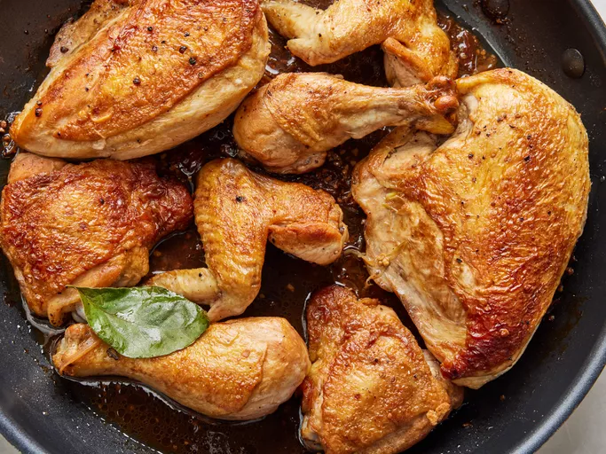

Chicken Adobo

Adobo is a popular Filipino dish and cooking process in Philippine cuisine.
Ingredients
- 2 tablespoons vegetable oil
- 3 lbs chicken, cut into pieces
- 1 large onion, quartered and sliced
- 2 tablespoons minced garlic
- 2/3 cup low sodium soy sauce
- 1/3 cup white vinegar
- 1 tablespoon garlic powder
- 2 teaspoons black pepper
- 1 bay leaf
Steps
- Heat vegetable oil in a large skillet over medium-high heat. Cook chicken pieces until golden brown, 2 to 3 minutes per side. Transfer chicken to a plate and set aside.
- Add onion and garlic to the skillet; cook until softened and brown, about 6 minutes.
- Pour in soy sauce and vinegar and season with garlic powder, black pepper, and bay leaf.
- Return chicken to pan, increase heat to high, and bring to a boil. Reduce heat to medium-low, cover, and simmer until chicken is tender and cooked through, 35 to 40 minutes.